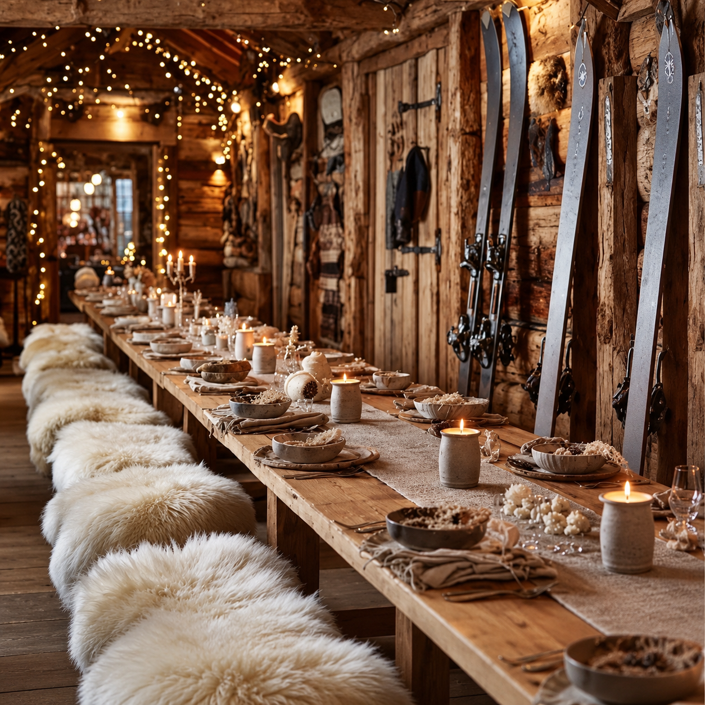
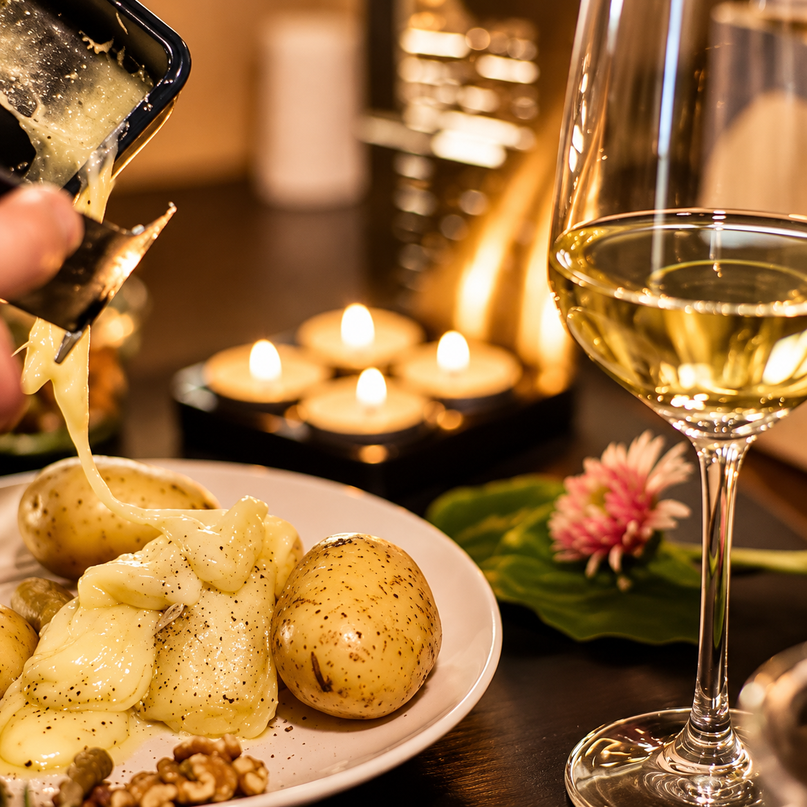
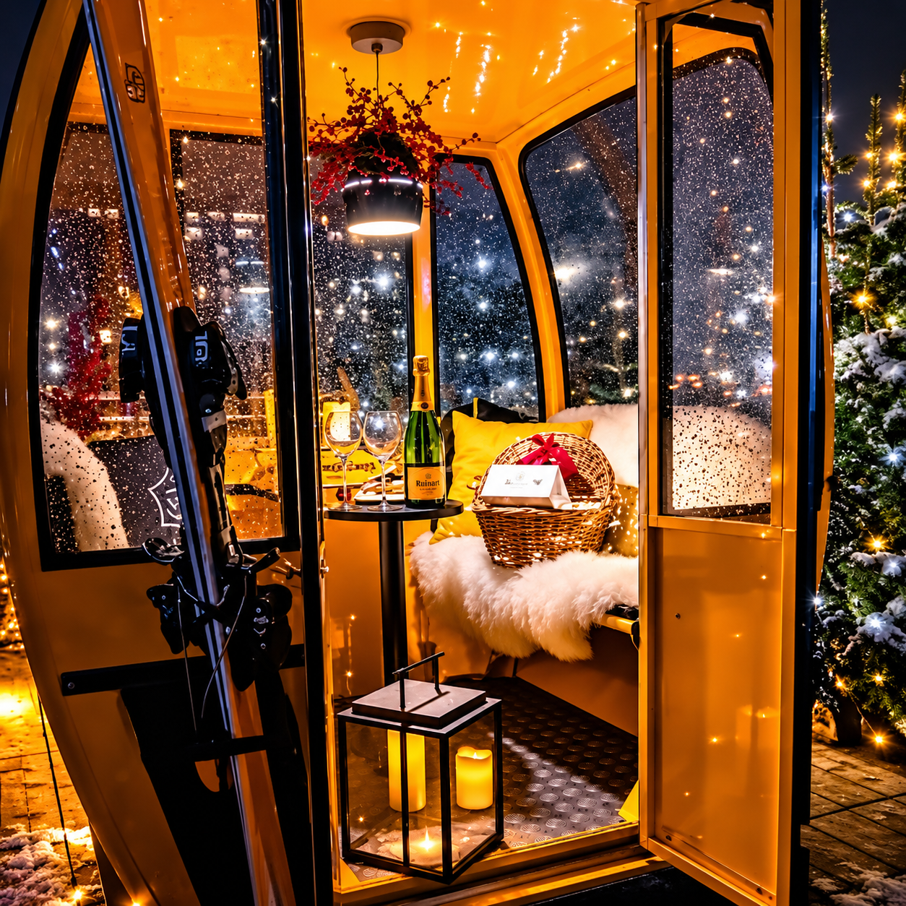
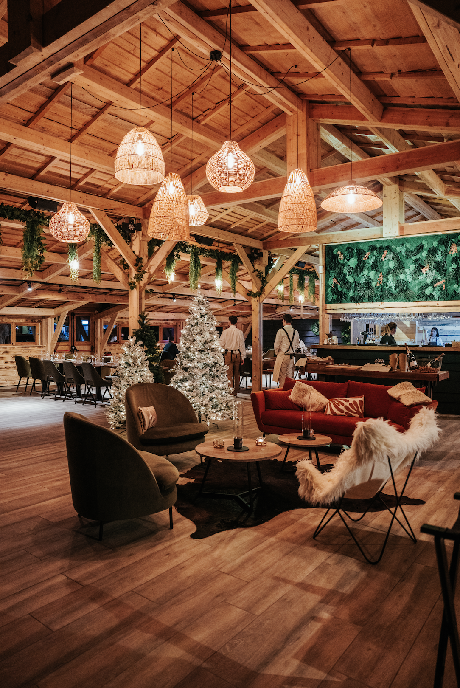
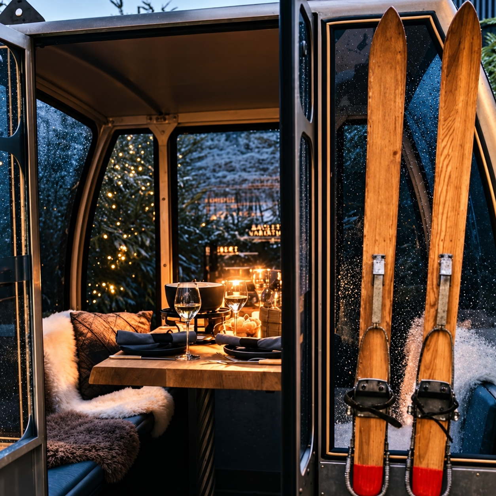
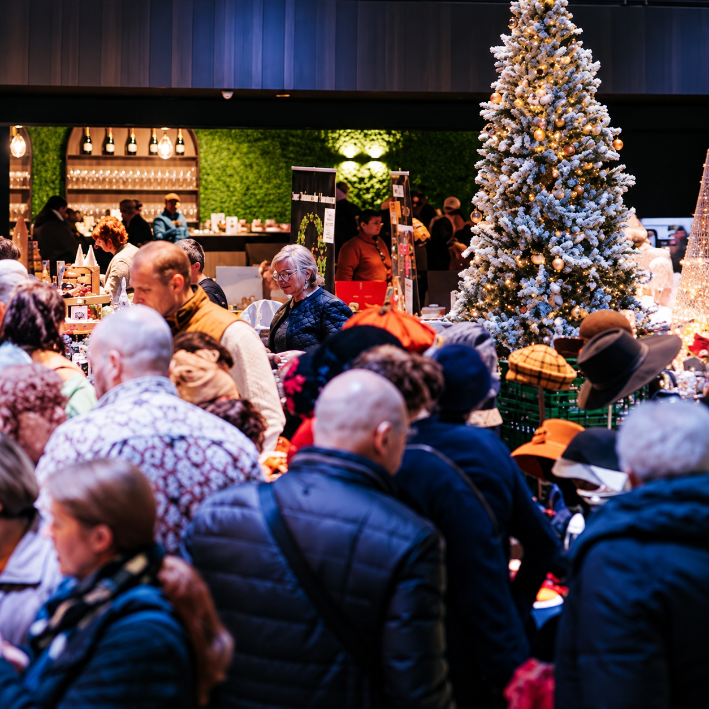
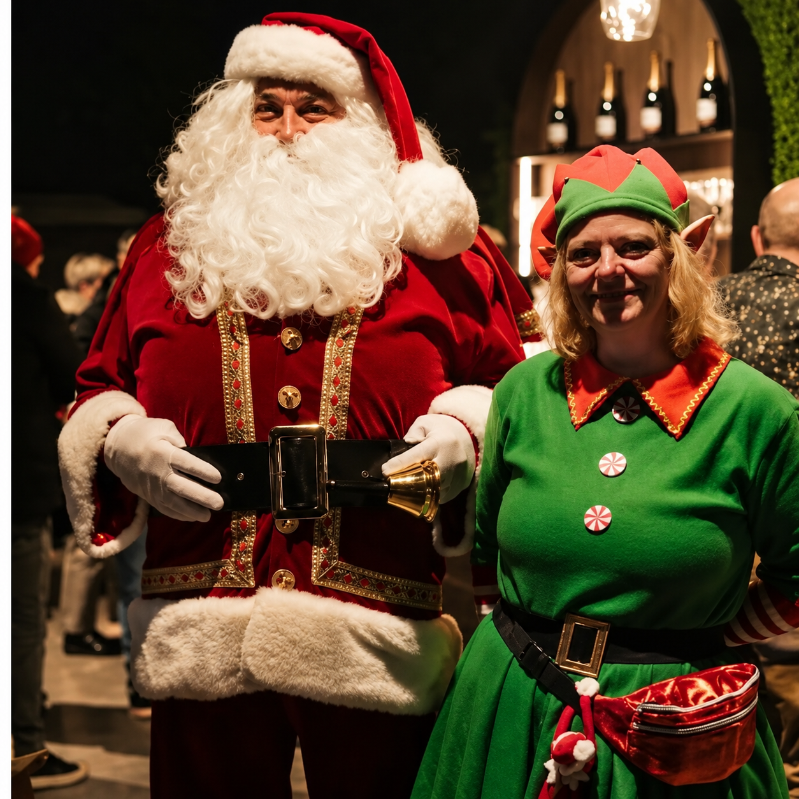
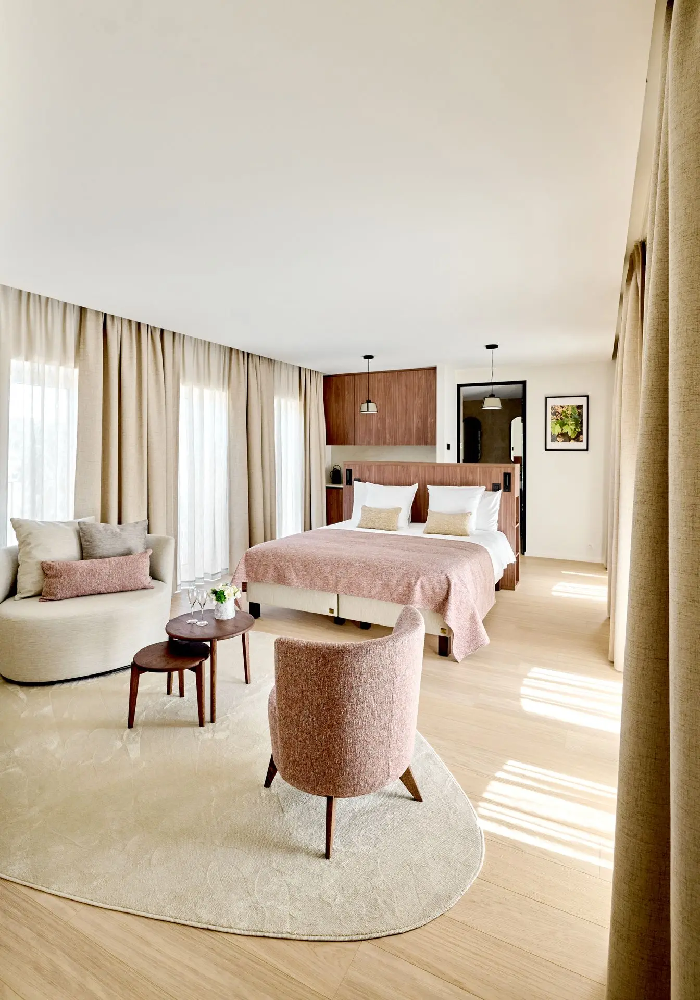
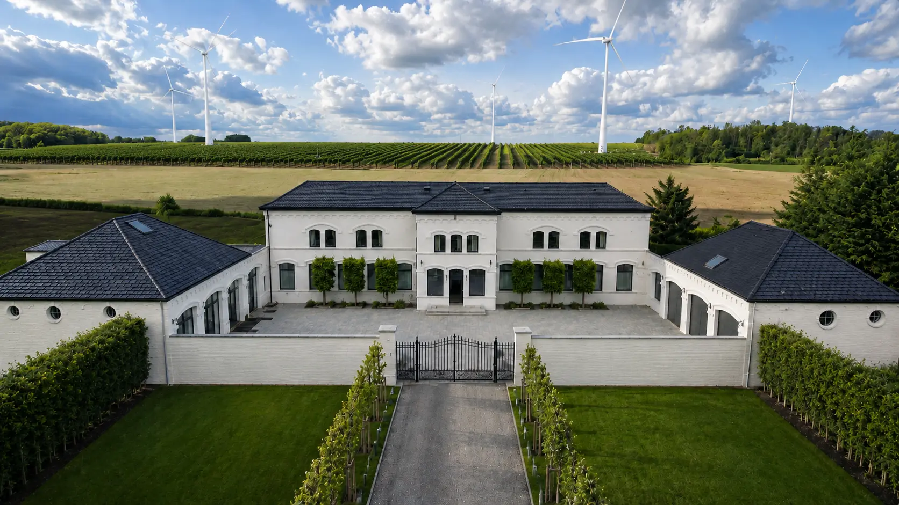
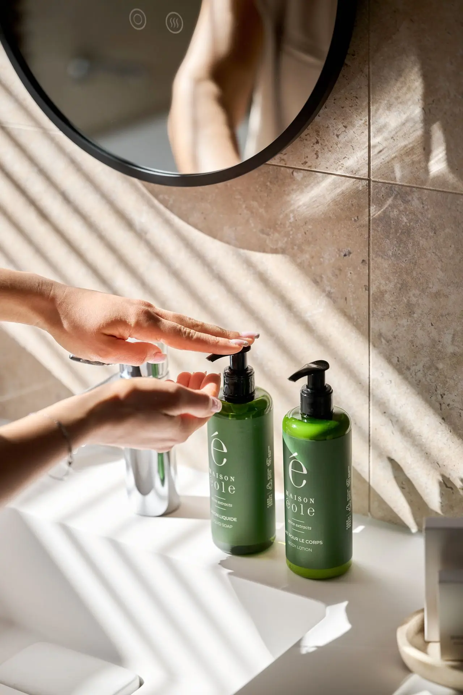

Le Chalet d’Hiver d’Éole
This winter, Domaine du Chant d’Éole brings the charm of Courchevel to the Belgian countryside, transforming its vineyard into an Alpine-inspired retreat.
From cosy chalet dining and private ski gondolas to a festive Christmas market and elegant overnight stays, discover a unique winter escape just outside Mons, perfect for a romantic evening, a gathering with friends or a weekend away.
Alpine Flavours at La Brasserie d’Éole
Winter begins around the table at La Brasserie d’Éole, where the autumn and winter menu introduces the comforting flavours of Alpine cuisine.
From 15 October 2026, guests can enjoy traditional mountain specialities, including raclette and fondue, prepared for leisurely lunches and evenings spent together.
On 18 November, the brasserie completes its seasonal transformation into a charming Alpine chalet. Warm wooden interiors, soft lighting and a welcoming atmosphere bring the spirit of the mountains to the heart of the vineyard.
Whether for a relaxed lunch or a cosy evening with friends, it is an inviting way to enjoy the winter season without travelling to the Alps.




Your Own Private Alpine Gondola
For something truly different, Domaine du Chant d’Éole introduces one of the season's most charming experiences: private dining inside a ski gondola.
From 18 November 2026, guests can settle into their own intimate cabin, surrounded by the atmosphere of an Alpine retreat, and share a traditional raclette or fondue.
Designed for two to four guests, the gondolas offer a distinctive setting for a romantic dinner, a special celebration or an evening with close friends.
A cosy and memorable way to experience the spirit of Courchevel, right in the heart of the Belgian countryside.

Private Gondola Experience
- Available from 18 November 2026
- Capacity: 2–4 guests per gondola
- Price: €50 per gondola, excluding dining charges
Christmas Among the Vines
As the festive season approaches, Domaine du Chant d’Éole welcomes its own Christmas market, bringing the magic of the holidays to the heart of the vineyard.
From 18 to 20 December 2026, the estate comes alive with Belgian artisans, local producers and independent creators offering handcrafted gifts, seasonal specialities and festive discoveries.
Wander between the stalls, find thoughtful presents for loved ones and enjoy the atmosphere of Christmas accompanied by music, seasonal food and a glass of something special.
For those wishing to make an occasion of it, combine an afternoon at the market with a cosy dinner at the Alpine chalet.


Extend the Experience at L’Éole Resort
Why let the evening end when you could turn your visit into a winter getaway?
Set within beautifully restored former stables and an 18th-century farmhouse, L’Éole Resort offers elegant rooms and suites surrounded by the peaceful Belgian countryside.
After an evening of Alpine dining, retreat to the comfort of your accommodation and enjoy a slower start to the following morning.
Guests looking for a different culinary experience can also discover L’Impératif d’Éole, the estate's gastronomic restaurant.
Whether for a romantic overnight stay or a weekend combining fine dining and relaxation, the resort offers a lovely way to prolong the experience.




Your Winter Escape, Thoughtfully Arranged
Whether for an intimate dinner in a private gondola, a festive afternoon among the vineyards or a relaxing overnight stay, Quintessentially would be delighted to arrange your visit and take care of the details.
Location
Domaine du Chant d’Éole
Grand’Route 58
7040 Quévy-le-Grand, Belgium
Near Mons
Key Dates
- 15 October 2026: Autumn and winter menu begins
- 18 November 2026: Alpine chalet transformation and private gondola dining begin
- 18–20 December 2026: Christmas market
- Overnight stays: Available through L’Éole Resort, subject to availability